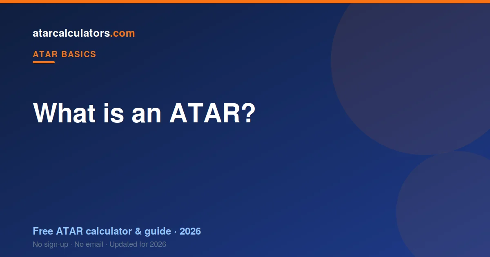

The ATAR (Australian Tertiary Admission Rank) is a percentile rank between 0 and 99.95 that shows where a student sits relative to their age group. It is not a mark: an ATAR of 80.00 means you performed better than approximately 80 per cent of your age group, not that you scored 80 per cent. Universities use it to compare school leavers from different schools, subjects and states on a common scale, and it is calculated from scaled Year 12 results using state-specific rules.
Key takeaways
- The ATAR is a percentile rank, not a mark out of 100.
- It runs from 0.00 to 99.95 in increments of 0.05.
- An ATAR of 80.00 means top 20% of the age group.
- It is calculated from scaled Year 12 results, not raw marks.
- Each state calculates it differently, but the output is nationally comparable.
- The ATAR is one of many criteria universities use.
- Your school does not affect your ATAR.
- There are many pathways to university without an ATAR.

What the ATAR is
The ATAR stands for Australian Tertiary Admission Rank. It is a number between 0 and 99.95, reported in increments of 0.05, that indicates a student's position relative to their age group in the year they complete Year 12. It is not a score, a percentage or a grade; it is a rank. As UAC puts it plainly: “The ATAR is a rank, not a mark.” [reference:0]
VTAC describes it as “an overall percentile rank reflecting a student’s Year 12 achievement compared to the age group in a given year.” [reference:1] QTAC calls it “the primary mechanism used across Australia for tertiary admissions”, expressed as a number from 0.00 to 99.95 that shows a student’s position relative to other students.
The ATAR is calculated by each state's tertiary admissions centre: UAC in NSW and the ACT, VTAC in Victoria, QTAC in Queensland, SATAC in South Australia and the Northern Territory, TISC in Western Australia, and UTAS in Tasmania. The name ATAR was adopted nationally from 2009 onwards (Queensland from 2020) to replace the old state-based ranks: the OP, ENTER, UAI and TER.
A rank, not a mark
This is the single most important thing to understand about the ATAR. An ATAR of 80.00 does not mean a student scored 80 per cent. It means they performed better than approximately 80 per cent of their age group. UAC explains it clearly: “An ATAR of 80.00 places you in the top 20% of your age cohort.” [reference:3]
VTAC makes the same point: “A student with an ATAR of 75.00 has achieved VCE results above 75 percent of the Year 12 age group.” [reference:4] The ATAR is a percentile, a position in a line, not a percentage of correct answers.
Because it is a rank, the ATAR is norm-referenced: it depends on how everyone else performs, not just on you. A student with the same raw marks in two different years can receive different ATARs, because the strength of the cohort changes. This is why the ATAR is not a fixed standard, and why comparing an ATAR to a mark is a mistake. [reference:5]
The ATAR is also not a pass or fail. VTAC is explicit: “There’s no pass or fail ATAR. Everyone who receives an ATAR has passed the VCE.” [reference:6] The ATAR is simply a rank used by institutions for some of their courses.
Why the ATAR exists
The ATAR exists to solve a practical problem: universities need a fair and objective way to rank thousands of school leavers who have studied different subjects, at different schools, in different states. UAC states the purpose directly: “The ATAR enables universities to rank applicants for selection in an objective and equitable way.” [reference:7]
ACTAC, the body representing all Australian admissions centres, adds that the ATAR's purpose is “to provide institutions with a consistent way to compare the overall achievement of students who have completed thousands of different combinations of Year 12 courses.” [reference:8] Without a common measure, universities would struggle to compare a student who studied Physics, Chemistry and Specialist Maths with one who studied History, Literature and Languages.
The ATAR is also designed to be an indicator of readiness for university study, not a judgement of a student's worth. ACTAC chair Teresa Tjia puts it plainly: “The ATAR is designed to indicate readiness for tertiary study; it does not reflect a student’s full range of capabilities and skills, or the many qualities they will bring to life after school.” [reference:9]
How the ATAR is calculated
The ATAR is calculated in three steps, though the details vary by state. VTAC describes the process as: subject scaling, calculating the aggregate, and converting aggregates to ATAR. [reference:10]
Step 1: Scaling
Each subject's results are scaled to account for the strength of the cohort taking that subject. As VTAC explains: “Scaling adjusts for the fact that it is more difficult to obtain a high VCE study score in some studies than others. This is not because some studies are inherently harder or easier, it is because some studies attract a more competitive cohort of students.” [reference:11]
Scaling ensures that students are neither advantaged nor disadvantaged by their subject choices. A subject taken by strong students across all their subjects will scale up; a subject taken by a broader cohort may scale down. [reference:12]
Step 2: Aggregation
Scaled results are combined into an aggregate according to state-specific rules. VTAC, for example, uses the primary four (one English study plus the next three highest scaled scores) plus up to two increments of 10% of a fifth or sixth study. [reference:13]
UAC in NSW uses the best 10 units of ATAR courses, including 2 units of English, with the remaining 8 units coming from the student's best other courses. [reference:14] QTAC in Queensland uses the best five scaled subject results. Each state's rules reflect the structure of its senior secondary certificate.
Step 3: Conversion to ATAR
Once aggregates are calculated for every student, they are ranked and placed on a percentile scale. VTAC describes it: “Once aggregates are calculated for all students, they are ranked and placed on a percentile scale, converting them into ATARs.” [reference:16]
The highest aggregates receive the highest ATAR of 99.95. ATARs below 30.00 are reported as “30 or less” on statements, though the exact figure can be accessed online. [reference:17]
If you want to see how your results translate into an ATAR in your state, try our state-by-state ATAR calculators.
Why each state calculates the ATAR differently
The ATAR is a nationally comparable rank, but it is calculated state by state, from state-specific senior secondary systems. Each state runs its own certificate, its own exam timetable and its own admissions centre, so the rules for which subjects count and how results are combined are not identical.
| State | Aggregation rule | Notes |
|---|---|---|
| NSW / ACT | Best 10 units, including 2 English | UAC uses scaled HSC marks; raw marks used in calculation, not aligned marks [reference:18] |
| VIC | Primary four + up to two increments | English must be in the primary four; increments are 10% of a fifth or sixth study [reference:19] |
| QLD | Best five scaled subject results | QTAC uses a 2000-point scale; ATAR reported 0.00–99.95 |
| SA / NT | University aggregate out of 90 | Based on best 90 credits of Stage 2 subjects |
| WA | Best four scaled scores | Plus 10% bonuses for LOTE and two maths subjects; TEA maximum 430 |
| TAS | Best Level 3 and 4 results over two years | From 2025, no requirement that three results be from final year |
Sources: UAC, VTAC, QTAC, SATAC, TISC and UTAS published rules. Aggregation rules are indicative and subject to change.
The differences reflect the different structures of the senior secondary certificates. A NSW student completing the HSC, a Victorian completing the VCE and a Queenslander completing the QCE are all assessed differently, but the ATAR gives universities a common output to compare.
For a deeper look at your state's rules, see our guides to how ATAR is calculated in NSW, how ATAR is calculated in VIC and how ATAR is calculated in QLD.
Is the ATAR the same nationally?
Yes and no. The ATAR is designed to be a nationally comparable rank, and universities treat an ATAR of 85.00 in one state as equivalent to an ATAR of 85.00 in another. As one NSW source puts it: “An ATAR of 85.00 in NSW will be considered equivalent to an ATAR of 85.00 in other states.” [reference:21]
Since 2016, members of ACTAC have agreed to a common method for determining how many students are allocated to each ATAR band, which helps ensure that the ATAR means the same thing across jurisdictions. [reference:22]
But the inputs are state-specific. A student in Queensland studies a different certificate, sits different exams and is assessed against a different cohort than a student in Victoria. The ATAR is a common output from different inputs, which is why the claim “the ATAR is the same nationally” is true at the level of the rank, but not at the level of the calculation.
ATAR vs selection rank
The ATAR is not always the final number that determines a university offer. Many universities apply adjustment factors — bonus points for equity, location, subject performance or special circumstances — and the ATAR plus these adjustments is the selection rank.
UAC explains the relationship: “Your selection rank for each course is your ATAR (or equivalent) plus any adjustment points the uni awards you.” [reference:23] The ATAR stays the same; the selection rank may be higher.
This distinction matters because course cut-offs are usually expressed in terms of selection rank, not raw ATAR. A student with an ATAR of 75.00 who is eligible for 5 adjustment points has a selection rank of 80.00 for the relevant course. Use our selection rank calculator to model how adjustment factors might affect your position.
What is a good ATAR?
There is no single answer, because “good” depends on what you want to study. The median ATAR across Australia is usually around 70.00, meaning half of all ATAR students receive a rank above 70 and half below. [reference:24]
Many courses accept students in the 70s. The most competitive courses — medicine, law at some universities, and a handful of others — require 95 or above. An ATAR of 90 puts you in the top 10 per cent of your age group; 95 in the top 5 per cent; 99+ in the top 1 per cent.
The ATAR is a means to an end, not the end itself. A student with an ATAR of 95 who wants to be a nurse should study nursing, even if the nursing cut-off is 75. The ATAR is not “wasted” when it is used to access a course that is right for you.
Common myths about the ATAR
Myth: The ATAR is a mark out of 100. No. It is a percentile rank. An ATAR of 80.00 means top 20%, not 80%. [reference:25]
Myth: Your HSC marks should be close to your ATAR. They are different measures. HSC marks show your standard in each course; the ATAR shows your position across the state. The median ATAR is 71.05, which is lower than the median score for almost all courses. [reference:26]
Myth: Hard subjects scale up automatically. Scaling depends on the strength of the cohort, not the content. A hard subject taken by a mixed cohort can scale modestly. [reference:27]
Myth: Your school affects your ATAR. No. The school you attend does not feature in the calculation. Your ATAR is based on your individual results. [reference:28]
Myth: The ATAR is the only way into university. No. Many pathways exist, including TAFE, foundation programs, internal transfers and mature-age entry.
For a fuller debunking, see our ATAR misconceptions guide.
How to use your ATAR
Your ATAR is used by universities to rank you for course offers. You do not “use” it yourself in a transaction; it is the number that universities read when they assess your application. But understanding it helps you make better decisions.
Check the selection rank, not just the ATAR. Course cut-offs are usually expressed as selection ranks, which include adjustment factors. A course that published a lowest ATAR of 80 may have admitted students with selection ranks above 80, even if their raw ATAR was lower.
Keep your preferences in order. Offers are made to the highest preference you qualify for. If you put a course you are unlikely to get into at the top, you may still receive an offer for a lower preference, but you will not be considered for the top course if you miss it.
Understand that the ATAR is one input. Many courses also require prerequisites, portfolios, interviews or additional assessments. The ATAR is necessary for some courses but not sufficient for all.
Getting into university without an ATAR
Not every university pathway requires an ATAR. Universities offer a range of alternatives, including:
- TAFE qualifications at Certificate IV, diploma or advanced diploma level, which can provide a selection rank.
- Foundation or enabling programs designed for students who need additional preparation.
- Internal transfers after a year of strong results in a related degree.
- Portfolios, auditions or interviews for creative and performance-based courses.
- Mature-age entry schemes for applicants who have been out of school for a period.
If you do not receive the ATAR you hoped for, these pathways are real options, not consolation prizes. Many students enter university through them and go on to complete their degrees successfully.
Want to see where your results might land?
Open the state-by-state ATAR calculators →Common questions
What does ATAR stand for?
ATAR stands for Australian Tertiary Admission Rank. It is a percentile rank between 0 and 99.95 that shows where a student sits relative to their age group, and it is used by universities to select school leavers for undergraduate courses.
Is the ATAR a mark out of 100?
No. The ATAR is a rank, not a mark. An ATAR of 80.00 means you performed better than approximately 80 per cent of your age group. It does not mean you scored 80 per cent on your exams.
What is a good ATAR?
There is no single good ATAR. What counts as good depends on the course you want to study. Many courses accept students in the 70s, while the most competitive courses require 95 or above. The median ATAR across Australia is usually around 70.00.
How is the ATAR calculated?
The ATAR is calculated in three steps: subject results are scaled to account for cohort strength, a student's best scaled results are combined into an aggregate according to state rules, and aggregates are ranked and converted into an ATAR on a percentile scale.
Why does each state calculate the ATAR differently?
Each state runs its own senior secondary certificate and assessment model, so the rules for which subjects count and how results are combined differ. The ATAR is designed to be a nationally comparable output, even though the inputs and methods vary.
What is the difference between ATAR and selection rank?
The ATAR is your raw percentile rank. The selection rank is your ATAR plus any adjustment factors you are eligible for, such as equity adjustments or subject bonuses. Universities use the selection rank when comparing applicants for a course.
Does my school affect my ATAR?
No. The school you attend does not feature in the ATAR calculation. Your ATAR is calculated from your individual results, moderated against the state cohort, not from your school's reputation or historical performance.
Can I get into university without an ATAR?
Yes. Many universities offer pathways that do not require an ATAR, including TAFE qualifications, foundation programs, internal transfers after a year of study, portfolios and mature-age entry schemes.
Estimate your ATAR in seconds
Pick your state, enter your subjects and see where your results land on today's scale.
Open the ATAR calculators